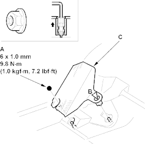
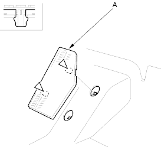
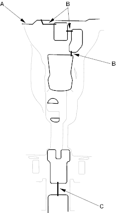

SRS components are located in this area. Review the SRS component locations (see page 23-24) and the precautions and procedures (see page 23-25) in the SRS section before performing repairs or service. Refer to the '01 Civic Shop Manual on this CD.
NOTE:
- Put on gloves to protect your hands.
- Take care not to damage, wrinkle or twist the carpet.
- Be careful not to damage the dashboard or other interior trim pieces.
- Remove these items, refer to the '01 Civic Shop Manual on this CD:
- Front seats, both sides (see page 20-229)
- Driver's dashboard under cover (see page 20-216)
- Passenger's dashboard lower cover (see page 20-220)
- Remove these items:
- Rear seat cushion (see page 20-40)
- Kick panels, both sides (see page 20-29)
- Door sill trim, both sides (see page 20-29)
- Consoles, front and rear (see page 20-37)
- LHD: Remove the nut (A) and using a hex wrench, release the clip (B), then remove the footrest (C).
Fastener Locations
A  : Nut, 1 B
: Nut, 1 B  : Clip, 1
: Clip, 1

- RHD: Detach the clips, then remove the footrest (A).
Fastener Locations
: Clip, 2

- Using a utility knife, cut the carpet (A) under the heater areas (B) and cut out the parking brake lever area (C) as shown, then pull back the carpet. LHD is shown, RHD is symmetrical.
